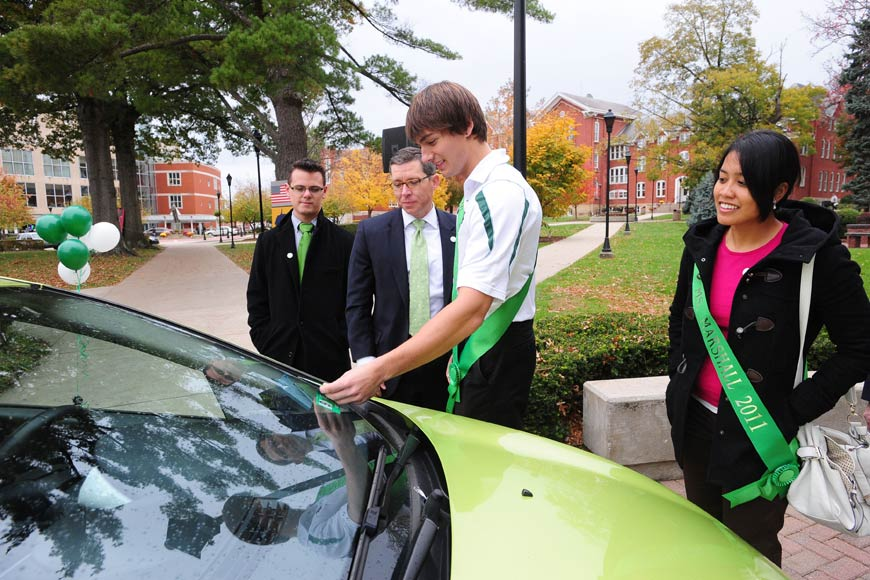
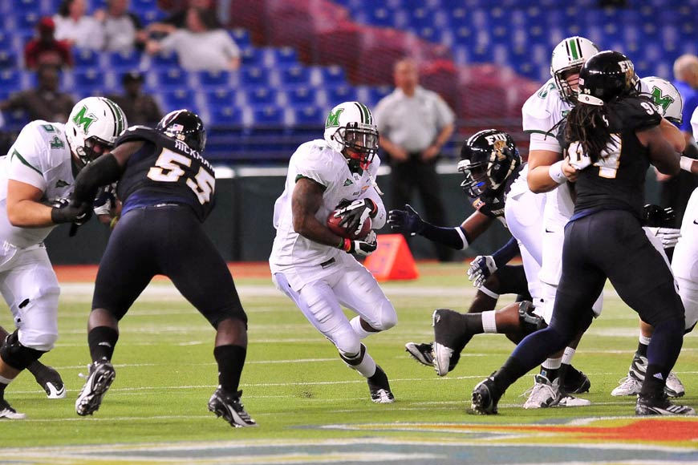

Alumni & Friends
-
Legendary television and radio personality Larry King took a turn in the guest chair during a taping of “Up Late,” Marshall University’s student-produced late-night variety show.
- 
WeCar provides Marshall with efficient, affordable, sustainable transportation alternative
-

At Marshall, student success is the most important goal.
- 
Marshall wins Beef 'O' Brady's Bowl.
-

Current and past WMUL-FM students and faculty pose for a photograph during WMUL-FM’s 50th anniversary celebration. Photos by A Modern Focus Photography.